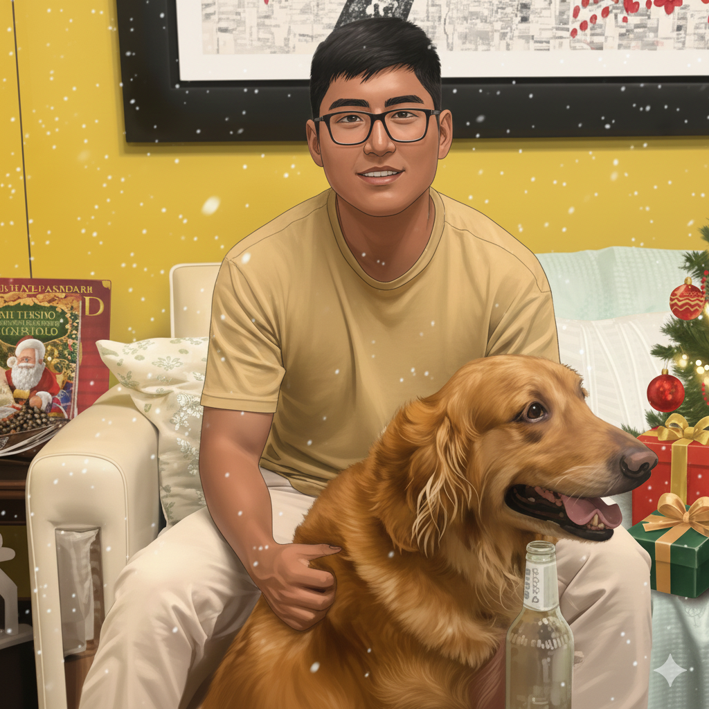
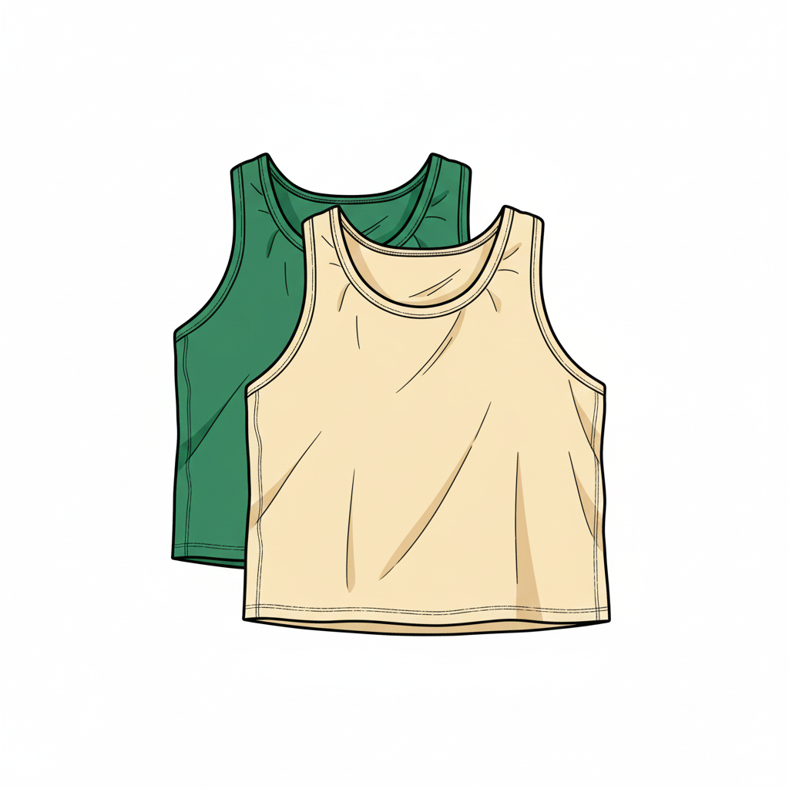
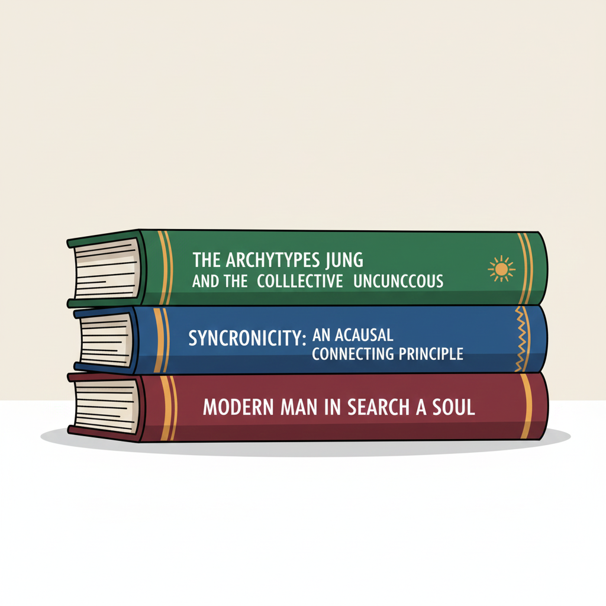
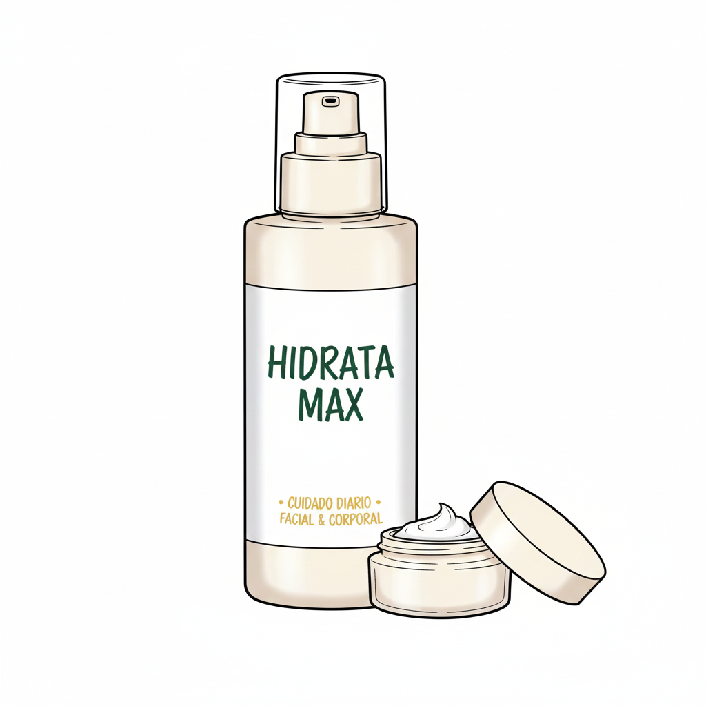
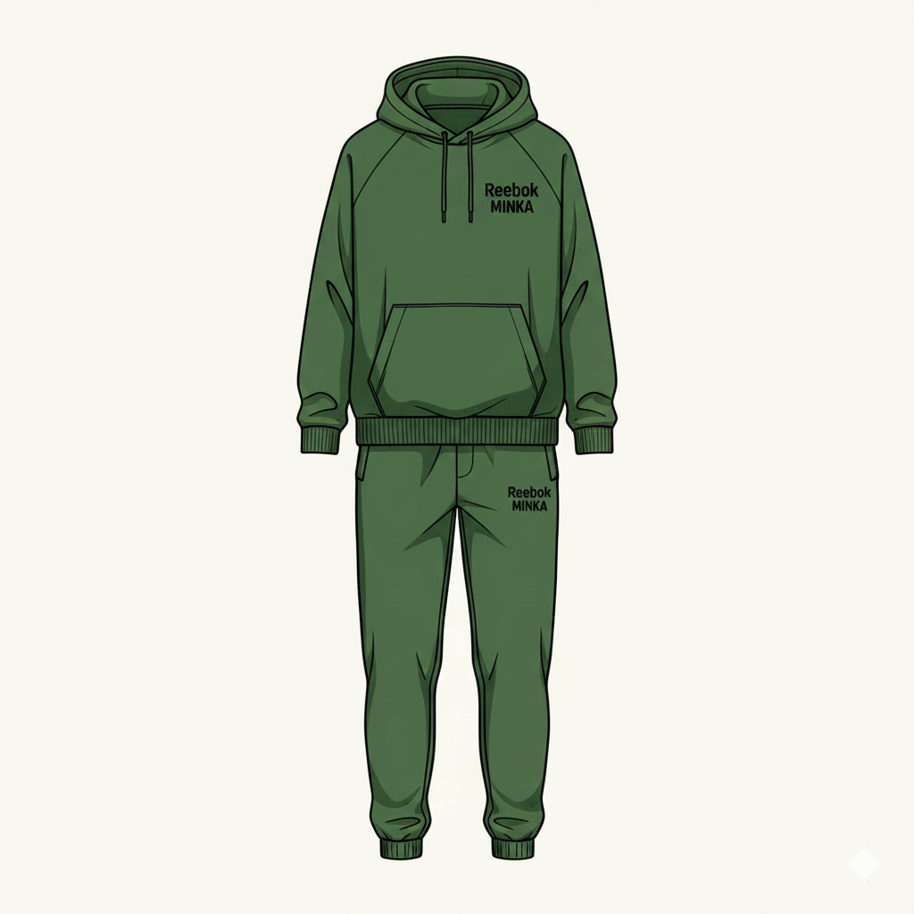

Lista de Deseos de Teras (Moreno Perú)
Para un estilo **cómodo y reflexivo**, Teras busca prendas oversize, colores neutros y material de lectura para el desarrollo personal y la introspección. ¡Ayúdale a renovar su guardarropa y su biblioteca!

1. Bividís (Musculosas) Anchos Oversize
**Detalles:** Sin estampas, estilo oversize, talla M. Colores sugeridos: **crema o verde oscuro**.
**Utilidad:** Perfectos para un look casual, cómodo y que le favorece por su tono de piel moreno.

2. Libros de Carl Gustav Jung
**Detalles:** Cualquier título de este autor de psicología analítica, enfocado en arquetipos, inconsciente colectivo o la individuación.
**Utilidad:** Para seguir cultivando su mente en temas de introspección y crecimiento personal.

3. Crema Hidratante Corporal y Facial
**Detalles:** Una crema de buena calidad, de preferencia sin fragancia fuerte, para cuidado diario.
**Utilidad:** Cuidado esencial para mantener la piel nutrida e hidratada, especialmente en climas cambiantes.

4. Conjunto de Ropa Deportiva (Buzo)
**Detalles:** Buzo completo, puede ser de marca (ej: **Reebok Minka** o similar), talla M.
**Utilidad:** Para entrenamientos, salidas casuales o simplemente para estar cómodo en casa con estilo.